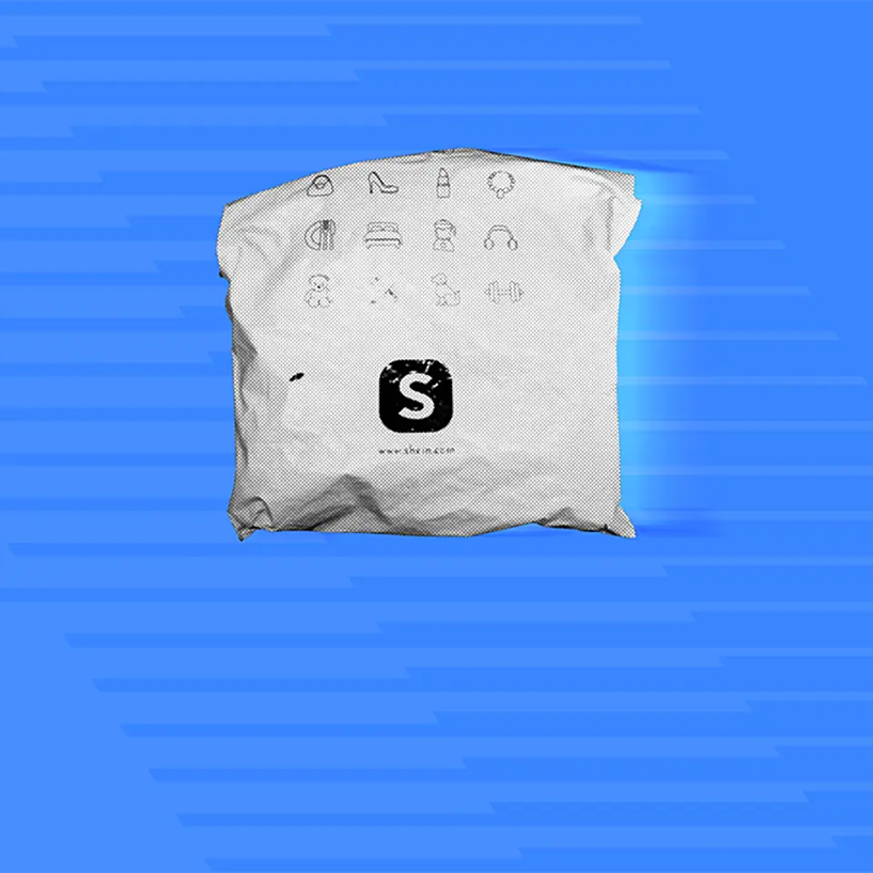
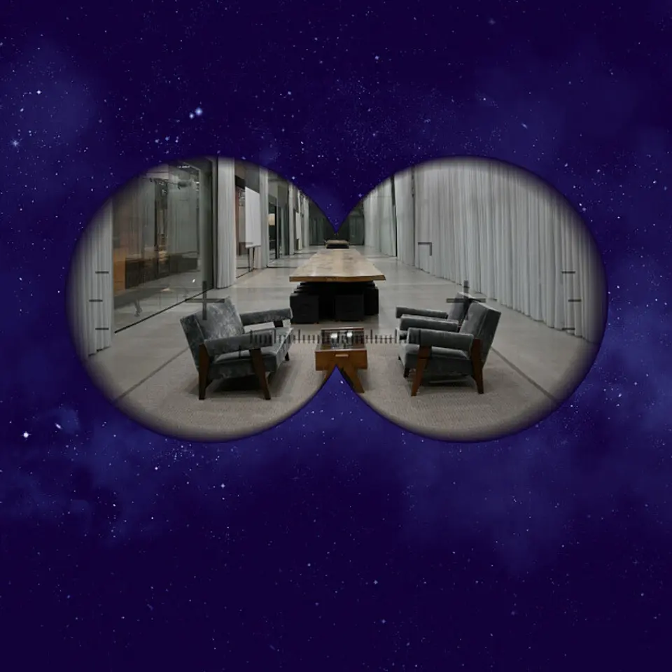
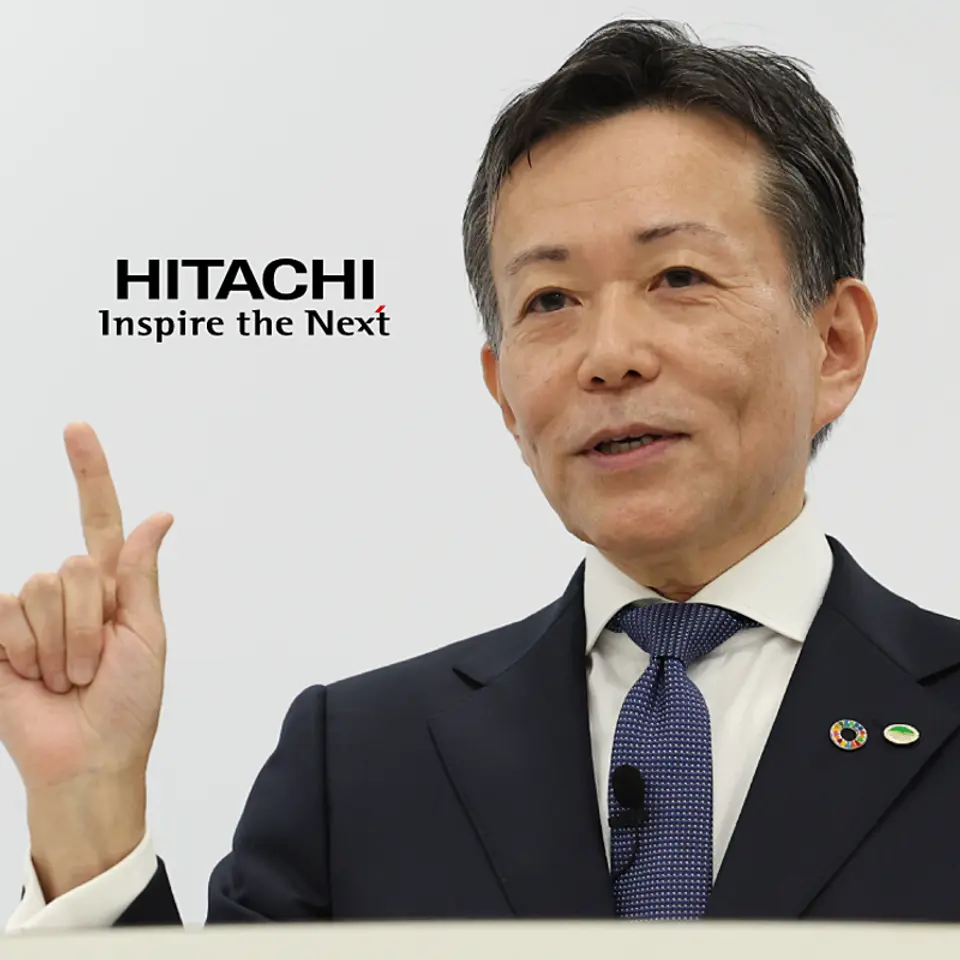
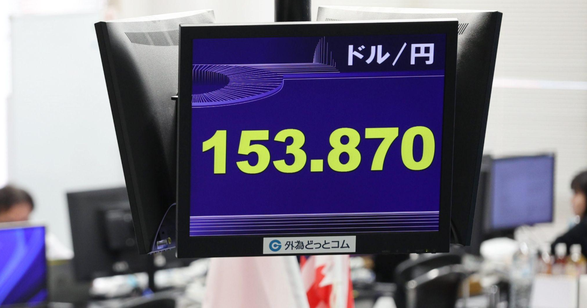

01
【直撃取材】なぜ、世界はSHEINに「NO」を突きつけるのか
発行日時：2026年9月8日 05:30 JST ・ NewsPicks編集部

あなたに関係ありそうな理由
低価格と高速な商品開発が強みだった事業が、規制、供給網、ブランド価値を同時に問われる局面を読む材料になるためです。
概要
この記事は、SHEINが築いた小ロット生産と素早い補充の仕組みを、単なる成長物語ではなく、制度・環境・消費行動が同時に変わる中で捉える。フランスでは超高速ファッションを対象にした法律が2026年7月に公布され、9月から環境負担金を価格の最大50％、上限12ユーロまで課す。2027年1月からは広告やインフルエンサーによる販促も禁じる方向だ。EUではデジタルサービス法に基づき、違法商品、推薦の透明性、依存性を生む設計なども問われる。記事が示すSHEINの強みは、広州の供給網を基盤に、少量で反応を確かめてから追加生産するLATRだ。売れ残りを抑えられるため、従来型アパレルの大量生産とは異なる効率を作ってきた。ただし、この効率は生産量や配送、原材料、労働条件を含む全体の負荷から切り離せない。記事では、同社の2025年のスコープ3排出量が2558万トンで、前年の2617万トンからは下がった一方、2023年の2126万トンよりなお約2割多いことも扱う。海上輸送の排出削減を進めても、事業規模が拡大すれば説明すべき対象は増える。中国以外に調達地を広げる難しさも、単に国を替えれば済む問題ではない。表示コメントでは、規制を環境・労働・消費者保護だけでなく保護主義や地政学の文脈でも見る意見、安さを利用できることと使い捨てを促すことを分けて考えるべきだという指摘があった。結論は、価格と速度だけで企業価値を測る時代ではないということだ。どの負荷を誰が負担し、推薦や広告が購買行動をどこまで押すのかを説明し、検証可能な形で改善を示せるかが、次の競争力になる。規制対応を広報の後追いにせず、商品企画、調達、物流、顧客への見せ方をつなぐ経営指標として扱えるかが問われている。制度の対象外へ商品を移すだけでは、利用者や取引先の疑問は消えない。商品数、返品、配送方法、原材料の選び方を同じ帳票で追い、外部から確かめられる範囲を増やせるかが重要になる。安さを守るための工夫と、社会的なコストを見えなくする工夫を混同しないことが、消費者にも投資家にも求められる。短期の対策ではなく、比較可能な指標を継続して示す姿勢が必要になる。
仕事や会話で使える一言
「速く安く作る強さは、説明できる供給網と一体でなければ長続きしにくいです。」
NewsPicks原文を読む
02
「NOT A HOTEL買いました」7000万円購入者からのメール
発行日時：2026年9月8日 05:30 JST ・ NewsPicks編集部

あなたに関係ありそうな理由
高額な不動産を「使う権利」として商品化する時、売上、会計、運営コスト、再販性をどう分けて評価すべきかを考える材料になるためです。
概要
この記事は、別荘を共同所有の形で販売するNOT A HOTELを、憧れの宿泊体験だけでなく、ユニットエコノミクスと顧客の期待の両方から読む。2026年3月期の売上高は112億円、粗利益は73億円だった。湯河原の13棟では、最上位の263平方メートルの部屋を36分の1、年10泊の利用権として9995万円で販売する。単純計算で1棟あたり36億円になり、プール付きの部屋では坪単価が5000万円超にもなる。購入者は年10泊の利用に加え、使わない日を運営会社へ戻す仕組みを選べる。会社がその日をホテルとして貸し出し、客室料金の半分を修繕費に充てる設計だ。記事では、購入価格の約3％に当たる年間管理費を1000万円の購入なら約30万円、10泊なら1泊30万円程度として捉える見方も紹介する。一方、粗利益率65％は会員権を先に販売する会計の影響を受けるため、事業の持続性を見るには、複数年でならした利益率、稼働率、修繕原資、借入と土地開発の回収を別に見る必要がある。経営側は数年単位の粗利益率を25％超とし、既存のリゾート企業との比較にも言及する。湯河原のプロジェクト総額は約240億円で、2026年3月期の売上112億円にはその販売が大きく寄与した。購入者は軽井沢の持分を7200万円で買い、将来の価格や開発の広がりにも期待している。表示コメントでは、かつての会員権ビジネスとの類似を指摘し、二次流通の価格、物件単体での収支、新たな需要を追うべきだという声があった。共同所有は資産を小さく買える便利な形だが、購入時の高揚と、数十年の運営・修繕・再販を混同しないことが大切だ。利用価値、投資価値、サービス価値を別々の数字で確かめてこそ、商品としての強さが見えてくる。特に、売りたい時に誰が買うのか、利用者が増えた時に予約の満足度をどう保つのか、建物の老朽化をどの前提で価格に織り込むのかは、購入前に確認したい。会員権を売った時点の利益と、サービスを提供し続ける力は別物である。美しい物件の写真だけでなく、利用実績と更新後の条件を時系列で見られることが、信頼の土台になる。判断の材料を購入後も更新できることが、共同所有の安心につながる。
仕事や会話で使える一言
「共同所有は買いやすさだけでなく、運営・修繕・再販まで分けて見て初めて価値を測れます。」
NewsPicks原文を読む
03
【利益9000億円】絶好調。日立が「次のAI」に全ベットしている
発行日時：2026年9月8日 05:30 JST ・ 宇津木 風南／NewsPicks編集部

あなたに関係ありそうな理由
生成AIを試す段階から、現場設備・データ・人の意思決定を結ぶ事業へ移す時に、何を競争力にするかを考える材料になるためです。
概要
この記事は、日立製作所が「2026年はフィジカルAI元年」と位置づけ、言葉を作るAIではなく、現実の設備やインフラを自律的に動かす領域へ経営資源を寄せる構図を追う。2026年3月期には過去最高の8023億円の利益を記録し、次期も9000億円で2期連続の最高益を見込む。背景には、家電など非重点事業を手放し、ITシステム、産業機器、鉄道、エネルギーの四つへ絞り、Lumadaを中核にしてきた組み替えがある。記事が区別するのは、人が決めた手順を機械に実行させる「自動化」と、環境や状況の変化に合わせて機器やシステムが判断する「自律化」だ。鉄道の実証では、エネルギーを15％、遅延を20％、保守コストを15％減らせる可能性を示す。重要なのは、モデル単体の賢さではなく、運行・保守・エネルギーという実際の現場データを結び、失敗時の責任も扱えることだ。日立はAIを自社で開発するより、顧客ゼロの立場で使いこなすことを選び、HMAXの2027年度売上を5050億円、68％増と見込む。顧客の現場に入り込むフォワード・デプロイド・エンジニアも、2026年7月時点の300人から2027年度末に1000人へ増やす計画だ。2021年のGlobalLogic買収で得たアジャイルな開発力も、その実装を支える。表示コメントには、OTとITをつなぐ事業ポートフォリオが強みだという見方の一方、IoTとの違い、FDEの規模拡大、標準化と現場ごとの責任をどう両立するのかを問う声があった。フィジカルAIは、導入件数を増やすだけでは成果にならない。予測や最適化の結果を誰が採用し、異常時に誰が止め、顧客がどの指標で効果を確認できるかまで設計して初めて、継続収益の事業になる。AI戦略を、モデル選びではなく現場の運用設計として見る視点が残る。データが不足した時や、現場担当者がAIの提案と異なる判断をする時に、結果をどう記録し次の改善へ戻すかも必要だ。実証の数字をそのまま横展開するのではなく、導入先ごとの安全、品質、費用の基準を合意できるかを見たい。実装力とは、現場の知識をモデルへ渡し、モデルの提案を現場の言葉へ戻す往復の力でもある。
仕事や会話で使える一言
「フィジカルAIの競争力は、モデルの性能だけでなく、現場で止めずに使い続ける運用に現れます。」
NewsPicks原文を読む
04
【保存版】仕事で「安心メンタル」を育む方法
発行日時：2026年9月8日 05:30 JST ・ NewsPicks編集部
あなたに関係ありそうな理由
緊張が高い場面で能力の有無だけを問題にせず、個人とチームが判断しやすい状態をどうつくるかを考える材料になるためです。
概要
この記事は、荻野淳也氏の書籍を手がかりに、「頭が真っ白になる」「想定外の質問で判断できない」といった反応を、能力不足ではなく脳と身体が脅威を感じた時の状態として捉え直す。扁桃体は危険を素早く察知する警報装置で、実際の危険だけでなく、上司からの呼び出しや重要な会議といった心理的な脅威にも反応する。心拍や呼吸が変わり、防衛反応が強まると、前頭前野の考える働きが十分に使いにくくなるという説明だ。記事の要点は、不安を根性で消すことではなく、反応と行動の間に小さな余白を作ることにある。紹介されるマインドフルネスは、注意を向ける瞑想、身体の感覚を確かめるボディスキャン、感情に名前を付けるラベリングの三つだ。さらに、Stop、Breathe、Notice、Reflect、Respondという順で立ち止まり、呼吸し、状態に気付き、振り返ってから応答するSBNRRの型を示す。自分への厳しさを緩めるセルフ・コンパッションでは、自分への親切さ、苦しみを人間に共通するものと見る視点、感情に飲み込まれず観察する姿勢を組み合わせる。他者との関係では、自己開示、評価を急がない聞き方、相手への思いやりが安心感を育てるという。表示コメントには、失敗を避けようとする反応は自己防衛でもあり、まず客観視することに意味があるという声、精神論だけでなく、何が負荷になるのかという条件を見つけるべきだという意見があった。この記事は医療的な治療の代替を示すものではないが、仕事の場面で自分や同僚を「弱い」と決めつける前に、どの刺激で余裕がなくなるのかを言葉にする入口になる。個人にだけ対処を求めず、会議の進め方、相談のしやすさ、失敗を共有できる関係まで見直すと、安心は気分ではなく仕事の条件として扱える。例えば、結論を即答することを当然にせず、考える時間を置く、質問の目的を先に共有する、相談を評価と結び付けない、といった小さな設計がある。自分の状態を言葉にしても不利益にならない関係があれば、呼吸法や内省を個人の孤立した努力にしなくて済む。安心を成果の反対側に置かず、良い判断を支える土台として扱いたい。小さな余白をチームで守る視点も欠かせない。
仕事や会話で使える一言
「落ち着けない時は能力を疑う前に、反応と応答の間に一呼吸ぶんの余白を作りたいです。」
NewsPicks原文を読む
05
【世界のニュース７選】円急伸、一時153円台 今回は「持続する」
発行日時：2026年9月8日 17:00 JST ・ The Economist（NewsPicks掲載）

あなたに関係ありそうな理由
為替、関税、エネルギー、選挙、資源が別々の見出しに見えても、事業や家計へ異なる時間差で影響することを整理する材料になるためです。
概要
この記事は、The EconomistのニュースをNewsPicksが掲載した七項目のダイジェストで、円相場から資源、選挙、貿易、気候までを一つの結論にせず並べている。円は一時1ドル153円台まで急伸した。日銀の利上げ観測で円キャリー取引が巻き戻される可能性が背景にあり、アナリストは今回の動きを当局の一時的な介入より持続しやすいと見る。為替は輸入価格や海外売上の換算だけでなく、金利差を前提にした資金移動が変わるときに大きく動く。カナダは米国製品約700品目への関税を準備し、米国はボンバルディアを含む追加関税を警告した。二国間の措置は対象企業だけの問題に見えても、部品、航空、調達先の選び方へ波及する。ドイツ東部の州選挙でのAfDの勝利は、メルツ政権への圧力と欧州政治の不確実性を映す。表示コメントでも、極右政党の伸長を驚きを持って受け止め、短い世界ニュースでも背景を追いたいという声があった。中東ではイランをめぐる緊張でエネルギー資産が攻撃され、原油は6週間ぶりの高値を付けた。ホルムズ海峡の安全性は、石油だけでなく海上保険、輸送計画、製造業の在庫に関わる。アルゼンチン沖のフォークランド諸島ではNavitasの開発が進み、EUはグリーンランドの重要鉱物、再生可能エネルギー、衛星通信に2億ユーロを投じる。資源を確保する競争は、採掘量だけでなく政治的なつながりとインフラへの投資を伴う。フランスのワイン輸出は6％、シャンパーニュは48％減り、イエローストーンでは1950年代と比べて積雪が25％減ったという。消費、地域経済、気候は別々の統計ではない。日々の七本をその日の相場材料で終わらせず、何が確定し、どこからが見通しか、誰の調達・移動・安全に影響するのかを分けて追うことが必要だ。例えば円高の理由を一つに決めず、金利、投機、政策発言を区別する。関税についても発表日だけでなく、対象品目、例外、実際の発動日を確認する。国際ニュースは遠い出来事に見えても、価格転嫁、輸送期間、投資判断を通じて生活と事業に戻ってくる。短い速報ほど、次に確かめるべき論点を残して読む姿勢が大切になる。変化の速さと影響の広がりを分けて見る必要がある。
仕事や会話で使える一言
「世界ニュースは一つの因果にまとめず、為替・供給網・安全を別々の経路で追いたいです。」
NewsPicks原文を読む